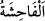
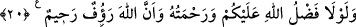

“Îmân edenler” îmanlarını hâlis kılanlar “arasında” veya mü’minler hakkında
“çirkin şeylerin yayılmasını” ortaya çıkmasını “arzulayan” isteyen “kimseler” (ki
onlar Abdullah b. Übey ve ifk hâdisesinde ona tâbi olanlardır) “için” bu sebepten
“dünyada da” had ve benzeri gibi “âhirette de” ateş ve ona bağlı “çetin bir cezâ
vardır.” Elemine dayanılmaz bir tür azâb vardır.
“__WORD__ fiillerin ve sözlerin çok çirkin olanlarına denir. Burada kasdedilen ise zinâ,
yâni zinâ haberinin/dedikodusunun yayılmasıdır.
Şeyhzâde der ki: “Âyetin mânâsı, onlar kendileri yaymadan ve ortaya atmadan îman
edenler hakkında çirkin şeylerin yayılmasını istemekle vasfedilmeleri değildir. Çünkü
bu kadar bir suç dünyada haddi gerektirmez. Bilakis âyetin mânâsı, maksadlı olarak ve
yayılmasını isteyerek Safvan ve Âişe gibi îman eden kimseler hakkında çirkin şeyleri ve
zinâ dedikodusunu yayan kimseler için… demektir.
el-İrşâd’da der ki: “Çirkin şeylerin yayılmasını isteyen ve bununla birlikte bizzat
yaymaya girişen kimseler, demektir. Bunun açıkça ifâde edilmemesi onların bunu
arzuladıklarının zikredilmesiyle yetinildiğindendir. Çünkü muhabbet ve arzu mutlaka
onu peşinden getirir.
Âyette “îmân edenler” zikredilmiştir. Çünkü insanlar içinde asıl olan mü’minlerdir.
“Allah” her şeyi, özellikle de çirkin şeylerin yayılmasını isteyenlerin içlerinde
gizlediklerini hakkıyla “bilir, siz bilmezsiniz.” O halde siz had ve benzeri konularda
zâhire göre amel edin, gizlilikler ise Allah’a âiddir.
20. Ya sizin üstünüze Allah’ın lütuf ve merhameti olmasaydı, Allah çok şefkatli
ve merhametli olmasaydı (hâliniz nice olurdu)!
Burada şartın cevabı hazfedilmiştir. Yâni, Allah’ın fazlı ve nimet vermesi olmasa,
size şefkat ve merhameti fazla olmasa, işlediğiniz hatâlardan dolayı sizi acelece
cezâlandırırdı.
19 ve 20. âyetlerde bazı işâretler vardır:
1- İfk ehli, iftirâlarını ortaya koymaları sebebiyle cezâlandırıldıkları gibi onu yayma
arzusunu gizlemeleri sebebiyle de cezâlandırılırlar. İşte bu, mü’minlerin elleriyle ve
dilleriyle kimseye eziyet etmemeleri gerektiği gibi kalp selâmetine de sâhip olmaları
gerektiğine delâlet eder. Bir hadiste şöyle buyrulmuştur: “Ben, cehennnem ehlinin
duyacağı şekilde göğüslerini döven bir topluluk biliyorum. Bunlar insanların
ayıplarını araştıran, onların gizlilik perdelerini yırtan ve onlar hakkında çirkin
şeyler yayan kötü huylu kimselerdir.”[127] Yine bir hadiste: “Kötülemek amacıyla